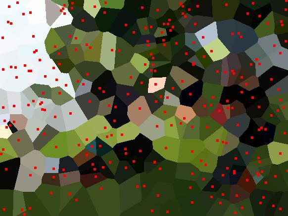
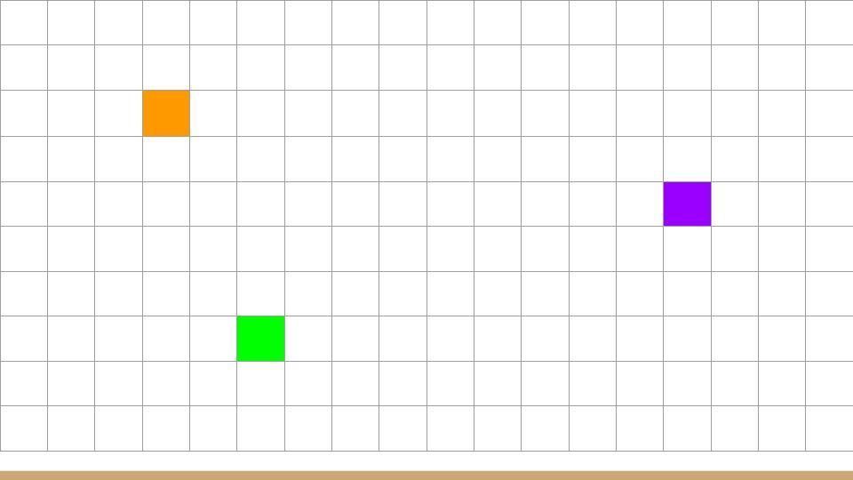
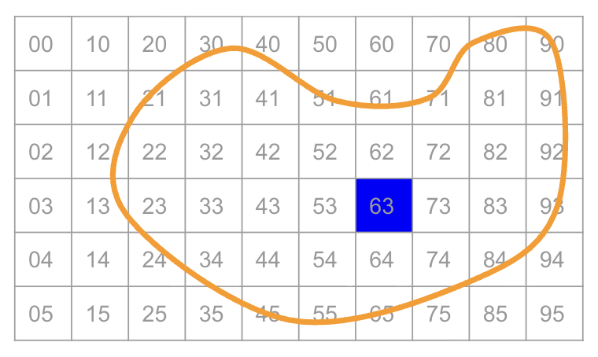
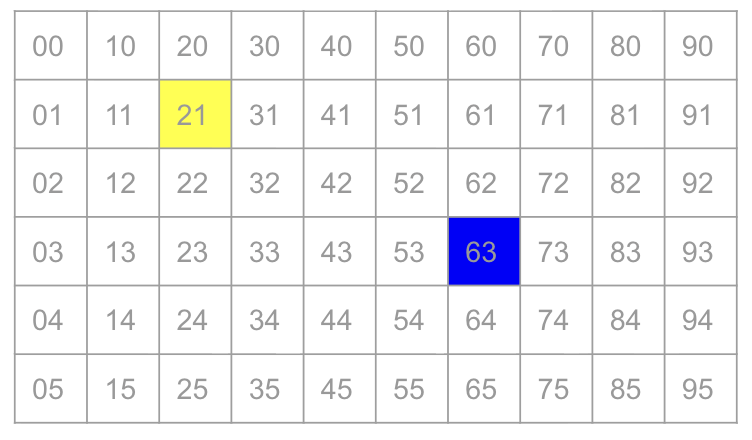

CPSC 203, 2026 W1
October 22, 2026

How much work is done?
Size of the image: \(n\)
(\(n =\) width \(\times\) height)
Density of centers: \(d\)
Number of centers: \(dn\)

To implement the fill we use a datastructure called a queue.
Operations on a queue:
enqueue(d): places data d at the “end” / “bottom” of the queue.dequeue(): removes and returns the element at the “start” / “top” of the queue.

We’ll use a Python deque as our queue.
deque methods will we use?deque is empty?(x,y)?Open today’s activity. We’ll implement the queue-based version of the algorithm.
voronoi_deque_nb.py.How much work is done?
Size of the image: \(n\)
(\(n =\) width \(\times\) height)
Density of centers: \(d\)
Number of centers: \(dn\)